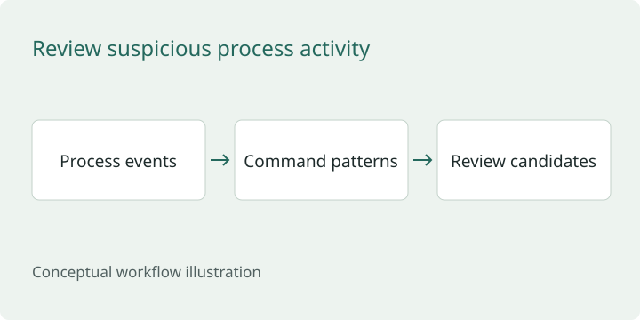

Detection engineering
SPL and Sigma rules, simulated attack scenarios, ATT&CK mapping and lab tuning.
Read case studyOpen an investigation, review the engineering work, or see the study software.
Prefer a role-based review? Choose a hiring path ↗
Résumé lab studies and four reproducible public exercises, with their evidence clearly distinguished.
SPL and Sigma rules, simulated attack scenarios, ATT&CK mapping and lab tuning.
Read case study Concept illustration
Concept illustrationAuthentication, endpoint and network context brought together in an investigation timeline.
Read case study Concept illustration
Concept illustrationKali Linux simulations, Wireshark packet review and Snort detection tuning.
Read case studyClassroom experience with Paraben E3 and a framework for explaining evidence examination.
Explore this case ↗
Investigated why a login rule missed two expected findings. Corrected results matched all five training cases.
Read case study
Reviewed encoded PowerShell and certutil commands, separating two review candidates from benign controls.
Read case study
Traced DNS failures and HTTP activity to specific frames in a generated 20-packet capture.
Read case studyChecked four intentional HTTP weaknesses, applied fixes, and repeated the same checks.
Read case studyPublic architecture summaries of private engineering projects.

Research infrastructure designed to keep experiments repeatable and the evidence behind results traceable.
Read case study
Research tooling designed to keep source support, conflicting observations, and permission to act distinct.
Read case study
Security+ and SC-900 study applications with adaptive practice, answer explanations, saved progress, and session resume.
Read case studyTry the public browser demos · Review the evidence directory
Specific scenarios and investigation designs to develop alongside the existing lab work.
Concept illustrationInvestigation design: connect isolated lab discovery to network observations and Splunk review.
Explore this case ↗Concept illustrationExample searches and analyst questions for authentication, execution and persistence.
Explore this case ↗Project briefs I can develop next. These are planned, with no completed results claimed.
A planned case covering message provenance, suspicious links and a defensible analyst handoff.
Read the project brief ↗A planned identity case that follows a suspicious sign-in through account and session context.
Read the project brief ↗A planned local tool for turning exported security events into a reviewable case summary.
Read the project brief ↗